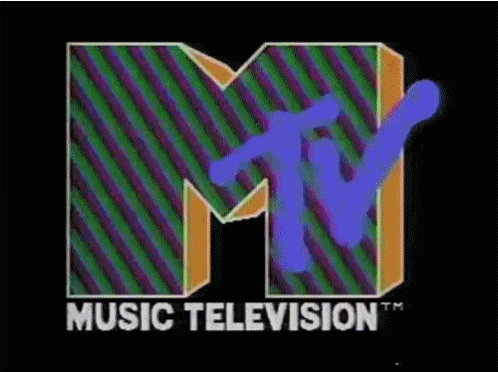

Influences and language
What is it about glitchy repetitions and humorous juxtapositions that make YouTube Poop so appealing? What is the creative process like? And most importantly, how is the genre still influencing internet humour in 2022? According to Payes (an enthusiast who has built a community of YouTube Poopers on Discord), the appeal of the genre lies in its editing tricks as well as in its ultimate goal to evoke humour. “It’s super funny to hear kid-friendly cartoon characters all of a sudden dropping the F-bomb, making sexual jokes or start talking backwards,” he told. As for NiceGuy, a member of the community Payes has built, YTPs are all about the randomness of the content offered. Discovering the genre in 2007, cs188 remains the top creator for the enthusiast.1
Aesthetically, they owe something to the frenetic editing style that MTV popularized in the 1980s. That style of film editing was typified by fast, non-linear cuts which placed focus less on character and plot than on mood, feeling, and totally rad locations. In the case of YouTube Poops, this is built on with a range of techniques designed to create glitchy repetition, humorous juxtaposition or, sometimes, plain old shock and annoyance. Trimming sentences to create profanity is a favorite. So is a stutter loop, in which a small section of video is made to repeat over and over. On the audio front, you can expect volume levels to be maxed out and distorted, or source audio to be pitch-shifted so that the effect makes spoken words sound like a song. The central tenet: it can be carried out by an average person sitting in front of their computer at home. What punk music was to the pop literate kids of the 1970s, so YouTube Poops are to today’s group of digital natives.2
Remix culture is, of course, nothing new. The idea of taking fragments of existing cultural artefacts and transforming them into something new has existed in the pop culture ether for decades. It’s a technique that has been used in everything from the sampling of old soul music in hip hop to the experimental “cut-up” writing styles of William Burroughs3, which influenced songwriters like Nirvana’s Kurt Cobain.
What YouTube Poops added to this was the sheer overload of frames-within-frames of cultural references. The art world has long relied on audience’s coming to works with a certain sphere of reference to draw upon. Renaissance artists assumed you would know the works of the Bible, thereby informing the paintings you were looking at. When Andy Warhol filled Los Angeles’ Ferus Gallery with paintings of Campbell’s Soup Tins in 1962, he knew it would prove controversial because intellectual art lovers had long sneered at the masses’ love of canned food. A good YouTube Poop throws similar (but updated) references, with all their built-in inferences, at the screen at a rate that would dazzle all but the most hardened of channel surfers and online browsers.
Combined with the constant evolution of the form, and the fine line between remixing the past and not retreading old memes, it can make the world of YouTube Poop a daunting thing for outsiders. Despite its deceptively low barrier to entry, this gives the medium perhaps more in common with the world of high art than its creators might think.
In the book The Dehumanization of Art, the late Spanish philosopher José Ortega y Gasset argues that the purpose of modern art is, almost entirely, to divide viewers into those who understand it and those who do not. It’s a social litmus test, and the answer dictates how you are perceived. Art, Gasset writes, functions “like a social agent which segregates from the shapeless mass of the many two different castes of men.” There are those who are illustrious and those who are vulgar. Similarly, there are those who will understand a particularly dank Spongebob meme and those who do not.
Source 2 ↗
Source 3 ↗